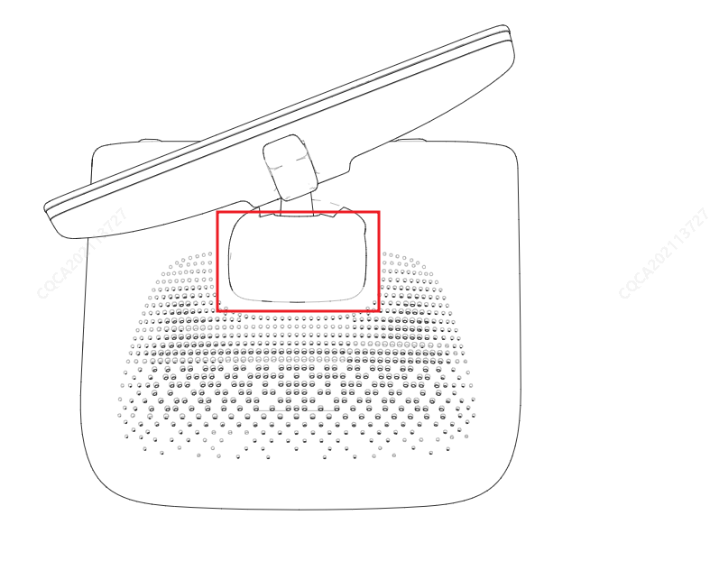
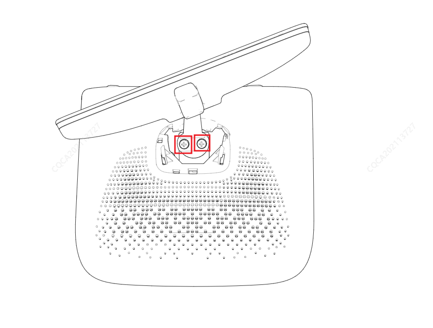

1. Потянуть облицовочную панель ветрового стекла (правую) вертикально вниз для извлечения.

2. С помощью крестовой отвертки выкрутить крепежный болт внутреннего зеркала заднего вида против часовой стрелки, после чего можно снять внутреннее зеркало заднего вида.

Установка выполняется в порядке, обратном снятию.